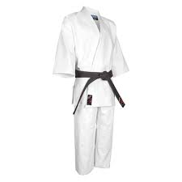
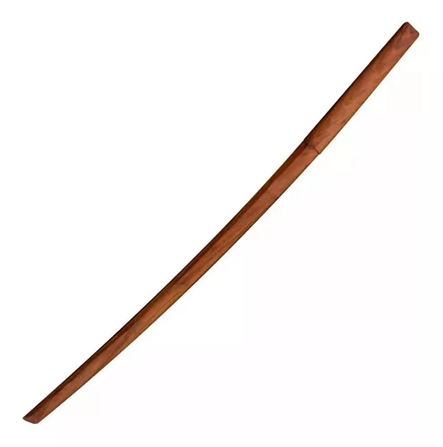
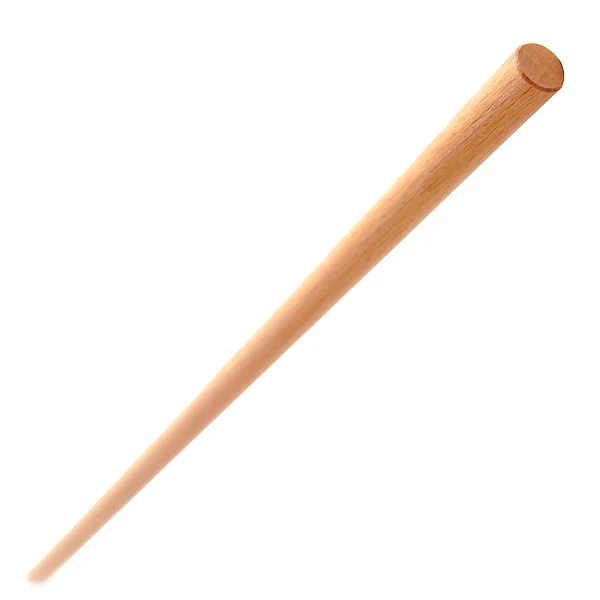

Nuestros Productos
Traje de Entrenamiento o GI
El uniforme de aikido, también conocido con el nombre de keikogi, el kimono de aikido está compuesto por un pantalón de algodón de color blanco o crudo y una chaqueta de la misma tonalidad.
Bokken
El bokken está hecho de una sola pieza de madera, aunque haya algunos hechos en varias partes del mundo, los más populares proceden de Japón y son de roble japonés rojo o blanco. Estas maderas hicieron popular al bokken japonés debido a que su grano compacto lo hace maravillosamente liso, suave y contundente.
JO
El Jō (杖 Jō), Yo (en inglés) o yó (en castellano) es un bastón de madera con aproximadamente 1,20-1,30 m de longitud, utilizado en las artes marciales japonesas, del Jōdō, el jōjutsu, el kendo, y como complemento al combate sin armas en el arte marcial tradicional del aikidō.
